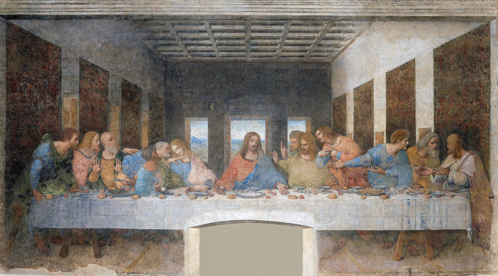
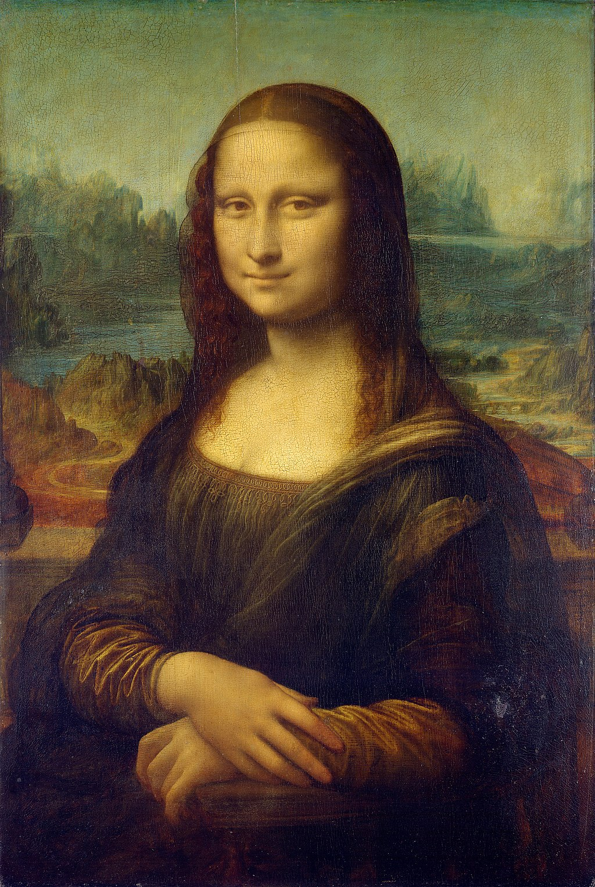
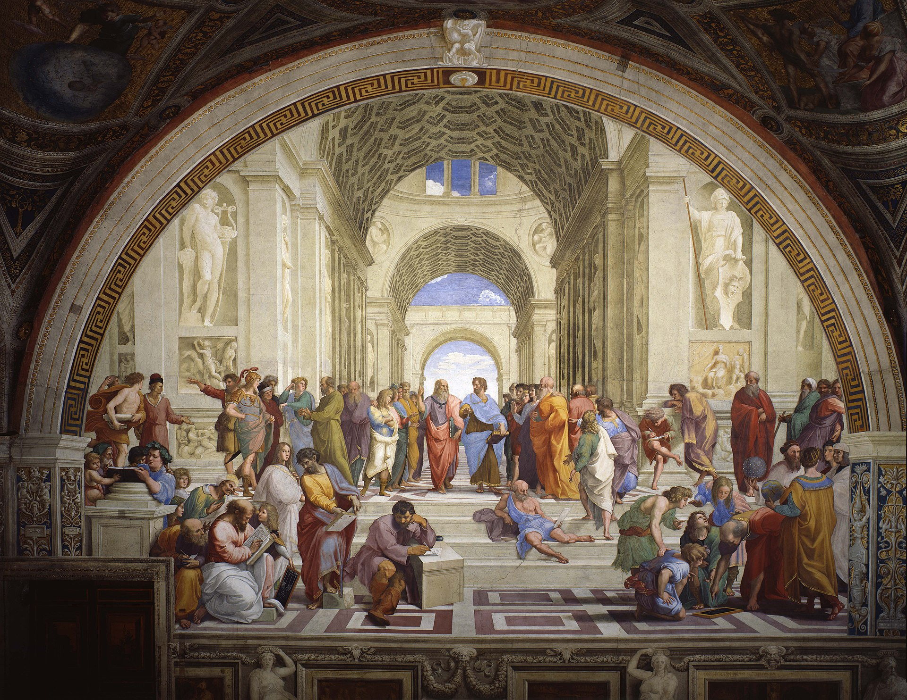
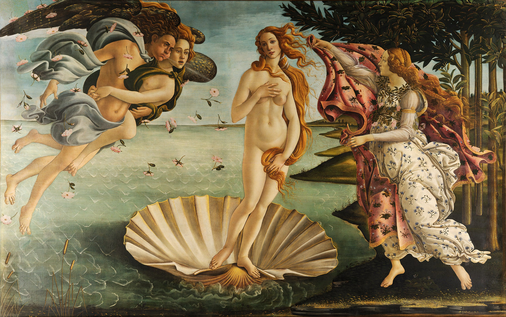

Als Renaissance (frz. Wiedergeburt, Wiedererweckung) bezeichnet man eine Kunst- und geistesgeschichtliche Epoche zwischen etwa 1400 und 1620, die – von Italien ausgehend – der Gotik folgte und vom Barock abgelöst wurde und die eine Wiederbelebung antiker Kunst und Gedanken zum Ziel hatte. Man darf unter dem Begriff Renaissance nicht lediglich die kulturelle Wiedergeburt der Antike verstehen. Denn die bildende Kunst dieser Epoche ahmte nicht einfach die wesentlichen Motive und Ausdrucksformen der Antike nach, sondern griff sie kritisch auf und entwickelte sie eigenständig weiter. Kunsthistorisch bedeutsam wurde die Malerei, welche viele spätere Kunstepochen- und Stile entscheidend prägte.
Stil
Eine der neuen Ideen und Konzepte, die während der Renaissance aufkamen, war der Humanismus. Dies war eine philosophische Denkweise oder intellektuelle Bewegung während des 13. Jahrhunderts, welche die Art und Weise beeinflusste, wie die Menschen sich selbst und Gott in Bezug auf die Welt wahrnahmen. Sie beeinflusste auch eine neue Herangehensweise an die visuellen Künste und Themen und bildete einen wichtigen Rahmen für die gesamte Bedeutung der Renaissance. Ein weiteres wichtiges Konzept in der Renaissance war die Rückbesinnung auf die klassische Antike, also auf die griechischen und römischen Ideale. Die Griechen versuchten, Schönheit, Harmonie und Symmetrie oder perfekte Proportionen in ihrer Kunst nachzuahmen. Dies wurde auch Realismus genannt, der die menschliche Form mit anatomischer Korrektheit darstellte. Dies unterschied sich von den eher abstrahierten, idealisierten Formen der menschlichen Figuren aus der vorangegangenen byzantinischen Kunstperiode.Es gibt mehrere primäre Merkmale, die uns helfen, die Gemälde der Renaissance und andere Bereiche wie Skulptur und Architektur zu verstehen. Sie alle tragen zur Ästhetik bei, zur Art und Weise, wie Farben und Licht eingesetzt werden, und zur Korrektheit der Proportionen, die in diesen Kompositionen dargestellt werden. Zu den Merkmalen gehören Konzepte wie Naturalismus, Contrapposto, Chiaroscuro und die Ein-Punkt-Perspektive, auch bekannt als lineare Perspektive.
Kunstmaterialien
Die lineare Perspektive (auch Ein-Punkt-Perspektive genannt) und der Fluchtpunkt waren zwei wichtige Techniken, die weit verbreitet waren, um ein Gefühl von Dreidimensionalität in Gemälden zu erzeugen. Dies war eine revolutionäre Technik, die den Künstlern die Möglichkeit gab, neue Räume innerhalb von Kompositionen zu schaffen und die Kunst auf ein neues Niveau zu heben, sowohl im wörtlichen als auch im übertragenen Sinne, als auch illusionistisch.
Während die Frührenaissance in Florenz zentriert war, fand die Hochrenaissance hauptsächlich in Rom statt, unter der Herrschaft der katholischen Kirche und des Papstes. Sie begann um 1495 bis 1520 und war der kulturelle Höhepunkt der künstlerischen Tugend. Während dieser Zeit verfeinerten die Künstler (Maler, Bildhauer und Architekten) die Techniken der früheren Perioden, kreierten neue Techniken und benutzten auch neue Medien wie Öl, die der Malerei eine ganz andere Wirkung verliehen.
Künstler und Werke
Andere Künstler der Frührenaissance sind Piero della Francesca. Eines seiner berühmten Kunstwerke ist Die Geißelung Christi (um 1455), in dem er gekonnt perspektivische Linien in den gemalten architektonischen Strukturen einsetzt, die den Innenraum mit den Außenräumen teilen. Außerdem gibt es Allesandro Botticelli, dessen La Primavera (1477 bis 1482) und Geburt der Venus (um 1486) zu den bis heute berühmtesten Gemälden gehören, die die mythologische Göttin Venus darstellen. Genau wie in der Frührenaissance gab es auch in der Hochrenaissance drei große Namen. Obwohl es auch andere große Künstler gab, sind die meisten von uns mit dem vertraut, was Leonardo da Vinci, Michelangelo und Raphael nicht nur der Kunstwelt, sondern der ganzen Welt gebracht haben. Leonardo da Vinci war ein Universalgelehrter, ein Mann mit vielen Fähigkeiten und Talenten. Er war Maler, Bildhauer, Designer, Ingenieur, Skizzenzeichner, Wissenschaftler und Erfinder. Er nutzte Techniken wie Sfumato und Chiaroscuro auf hohem Niveau, was seinen Gemälden eine kunstvolle Tiefe und eine geheimnisvolle Qualität verlieh.
Einige seiner berühmten Gemälde sind die Mona Lisa (La Gioconda) (ca. 1503), die Jungfrau von den Felsen (1483 bis 1486), die Dame mit dem Hermelin (1489), der vitruvianische Mensch (ca. 1485), Das letzte Abendmahl (1498), Salvatore Mundi (1500), und Zeichnungen wie Porträt eines Mannes in Rötel (1512), Embryo im Mutterleib (ca. 1510 bis 1512), Die Jungfrau mit Kind, die heilige Anna und Johannes der Täufer (ca. 1491 bis 1508).Ein Beispiel für Da Vincis geniales Können ist sein Gemälde das letzte Abendmahl. Dieses Gemälde stellt Christus als zentrale Figur dar, der an einem langen, horizontalen Tisch sitzt, mit seinen Jüngern neben ihm. Hinter ihm befinden sich drei vertikale Fenster, wobei das mittlere Fenster direkt hinter Christus liegt und fast wie ein Heiligenschein wirkt, der seinen Kopf einrahmt. Entlang der Wände sehen wir auch vertikale rechteckige Öffnungen, die unseren Blick zum Fluchtpunkt führen.

Leonardo da Vinci: Das letzte Abendmahl

Leonardo da Vinci: Mona Lisa

Raffael: Die Schule von Athen

Sandro Botticelli: Die Geburt der Venusvan Eyck: Arnolfini Hochzeit